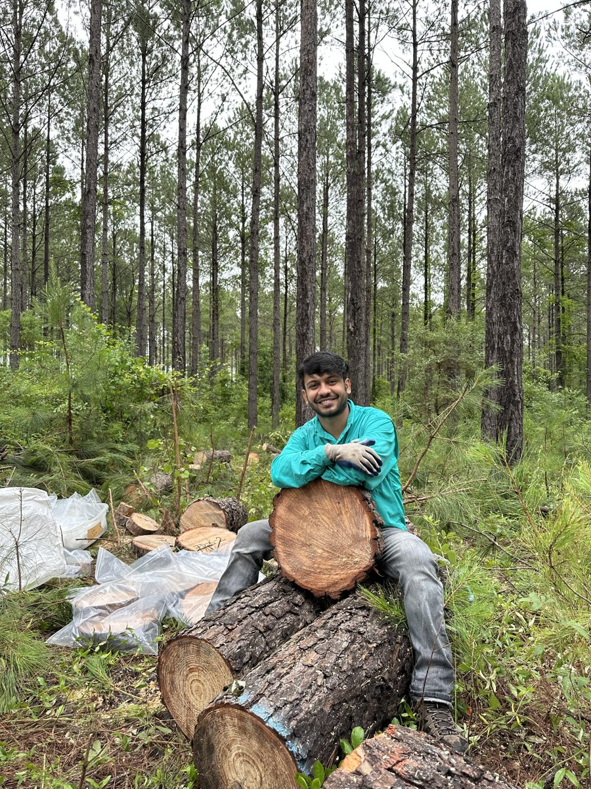

PhD Student · Mississippi State University
Deep learning for wood & biomass.
I'm a PhD student in Sustainable Bioproducts and an M.S. student in Industrial & Systems Engineering (Data Analytics) at Mississippi State University. I build computer vision and explainable AI models that read material properties, like moisture content and strength, from images.
